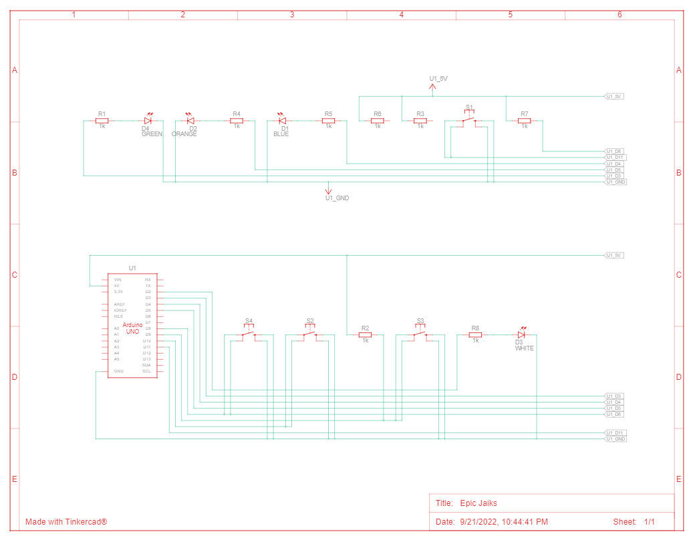

Brain storming
The card game known as the memory game or concentration, as it is often known is a favorite of both kids and adults everywhere. One of the traits necessary to succeed in it is a good memory. However, this is insufficient.
The memory game may be considered as a game of strategy if it is believed that the participants have flawless memory. Under this supposition, the game is studied, and the best course of action is discovered. It is uncomplicated and even surprising.
~~~~~~~~~~~~~~~~~~~~~~~~~~~~~~~~~~~~~~~~~~~~~~~~~~~~~~~~
Component
1. Arduino : https://amzn.to/2qU18sO
2. 9v battery: https://amzn.to/2zIcBmL
3. Switch: https://amzn.to/2upTngE
4. Jumper wires: https://amzn.to/2zKePBX
5. Cardboard: https://amzn.to/2JtgVFZ
6. Male DC Barrel Jack Adapter for Arduino : https://amzn.to/2DLx6jI
7. 4 Push Button: https://amzn.to/2qRwssp
8. 100 Ohm Resistor: https://amzn.to/2Q8zxCs
9. 4 different colored LEDs: https://amzn.to/2Kb6EQA
10. 9v Battery Connector: https://amzn.to/2r3TeNP
~~~~~~~~~~~~~~~~~~~~~~~~~~~~~~~~~~~~~~~~~~~~~~~~~~~~~~~~
Tinkercad
The software used in this task is a free web application for 3D design, electronics, and coding is called Tinkercad. It's the best way to learn about Autodesk, a world authority in design and manufacturing technologies.
Step 1:
searching for the selected components must be the first step to be able to construct the circuit.
The components selected are shown in the following picture.
Step 2:
Now It's the time for connecting the components. the schematic for the circle is shown in the following picture.
The real circuit is shown in the following picture
~~~~~~~~~~~~~~~~~~~~~~~~~~~~~~~~~~~~~~~~~~~~~~~~~~~~~~~~
Coding
we need to use 8 pins from the arduino. 4 pins used as an input and the other four as outputs. the input pins will be connected to the switches meanwhile the output pins will be connected to the leds.
Code written:
pinMode(2, OUTPUT);
pinMode(3, OUTPUT);
pinMode(4, OUTPUT);
pinMode(5, OUTPUT);
pinMode(8, INPUT);
pinMode(9, INPUT);
pinMode(10, INPUT);
pinMode(11, INPUT);
~~~~~~~~~~~~~~~~~~~~~~~~~~~~~~~~~~~~~~~~~~~~~~~~~~~~~~~~
After that we will start initializing our variables. The memory game will only have ten levels so I created an array of size 10 to carry the values of random pattern created. I also created a flag to indicate the end of the game when the player enters a wrong move he loses.
Code written:
int x;
int arr[10]={0};
int output1,output,output3,output4, flag=0;
~~~~~~~~~~~~~~~~~~~~~~~~~~~~~~~~~~~~~~~~~~~~~~~~~~~~~~~~
The rest of the code basicaly handles the phase of checkening if the entered value is right or wrong and calculates the score for the player.
whole code file: https://drive.google.com/file/d/1A0lr-CDMULaaE_SNDA7W3Ti_lRM3V6I4/view?usp=sharing
~~~~~~~~~~~~~~~~~~~~~~~~~~~~~~~~~~~~~~~~~~~~~~~~~~~~~~~~
GAME ON!!!!!
This is a part of the game played the pattern was as following: (orange, green, blue, white, white...etc)
That's it I hope this was useful for you ^^♥️